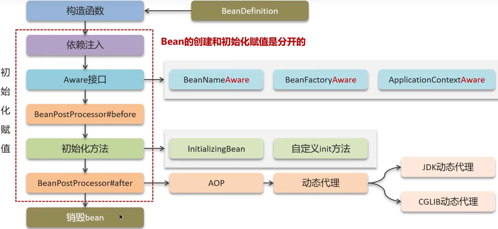

关于SpringBean的生命周期在面试中是常问的一个问题，正好今天考了一下视频讲解， 来总结一下，顺便加深一下理解。
在Bean生命周期中，首先Spring会通过BeanDefinition来获取bean的定义信息， 然后调用构造函数来实例化Bean对象，下一步执行是bean的依赖注入，然后执行那些实现Aware接口重写的方法， 然后是执行初始化方法之前调用的后置处理器，然后是初始化方法，这个初始化方法有两种，一个是实现接口重写方法， 另一个就是自定义初始化方法，然后调用初始化方法之后的后置处理器，这个后置处理器一般是对类增强的时候用的，比如一个类用AOP被增强， 那一般就是使用初始化方法之后执行的哪个后置处理器来增强的。最后就是销毁了，当Spring容器关闭的时候，就会执行销毁的方法， 以下是大致的流程图

 Arkle
Arkle Gavin
Gavin 关于
关于 更多
更多